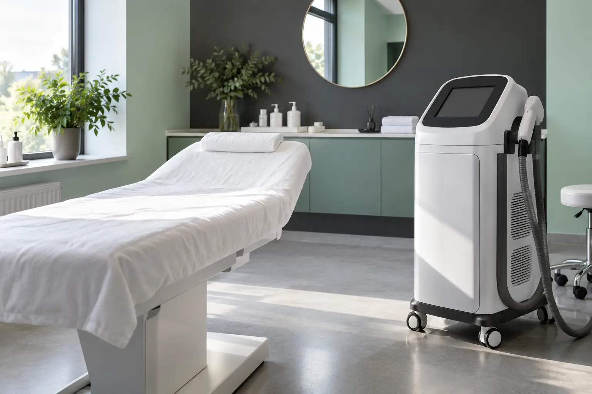

Plaukų šalinimo lazeriu gidas: metodas, konsultacija ir rezultatų ribos
Autorius: Madbeauty redakcija · Numatyta 2026 m. lapkričio 6 d. 10:00 (Lietuvos laiku)
Sužinokite, nuo ko priklauso lazerinio plaukų šalinimo rezultatas, ką aptarti konsultacijoje ir kaip palyginti paslaugos apimtį nepasikliaujant pažadu visam laikui pašalinti plaukelius.

Lazerinis plaukų šalinimas skirtas sumažinti plaukelių ataugimą, tačiau negalima pažadėti, kad visi plaukeliai bus pašalinti visam laikui. Rezultatas priklauso nuo plaukelių spalvos ir storio, odos ypatybių, kūno vietos bei naudojamo lazerio. Prieš renkantis paslaugą verta išsiaiškinti, koks metodas ir įrenginys bus naudojamas, kokio pokyčio galima tikėtis ir kokios yra jo ribos.
Nuo ko priklauso rezultatas?
Amerikos dermatologų akademija nurodo, kad rezultatui svarbios plaukelių spalva ir storis, kūno sritis, odos spalva ir naudojamas lazeris. Plaukeliai gali ataugti rečiau, plonesni ar šviesesni, o daliai žmonių gali prireikti palaikomųjų procedūrų. Tai nėra individuali prognozė: AAD apžvalgoje apie lazerinį plaukų šalinimą aprašomos bendros rekomendacijos, o konkretaus žmogaus rezultatas priklauso nuo jo situacijos.
Nėra vieno visiems tinkamo procedūrų skaičiaus ar grafiko. Konsultacijoje paprašykite paaiškinti, nuo kokių požymių būtų sprendžiama apie procedūrų intervalą, kaip bus vertinamas pokytis ir ar gali reikėti palaikymo. Atsargiai vertinkite garantijas dėl visiško ar ilgalaikio pašalinimo.
Ką išsiaiškinti prieš procedūrą?
- Koks tiksliai metodas ir įrenginys siūlomas: lazeris ar kitas šviesos metodas? Vien pavadinimo reklamoje neužtenka šiam skirtumui suprasti.
- Kuri kūno vieta įtraukta į paslaugą ir kaip apibrėžtos jos ribos?
- Kaip bus įvertintos jūsų odos ir plaukelių ypatybės bei ankstesnės procedūros?
- Koks rezultatas laikomas realistišku jūsų atveju, kokios galimos reakcijos ir kokių priežiūros nurodymų reikėtų laikytis?
- Kas įeina į kainą, ar ji skaičiuojama už vieną vizitą, zoną ar paketą ir kokios yra keitimo bei atšaukimo sąlygos?
Apsauginiai akiniai yra svarbi procedūros saugos dalis. AAD nurodo, kad juos turi dėvėti visi procedūros patalpoje esantys žmonės. Taip pat paprašykite iš anksto paaiškinti, kokių reakcijų galima tikėtis ir į ką kreiptis, jei po procedūros kyla nerimą keliančių simptomų.
Kaip palyginti skirtingus pasiūlymus?
Lyginkite vienodą paslaugos apimtį: tą pačią kūno vietą, tą patį metodą ir įrenginio tipą, kainą už vizitą, įtrauktas paslaugas bei galimas papildomas išlaidas. Paketo pavadinimas pats savaime nepasako, ar jo apimtis jums tinkama, ar kiek procedūrų prireiks.
Pavyzdžiui, jei du pasiūlymai skirti pažastims, patikrinkite, ar abiejuose įtrauktos abi pažastys, ar vienodai skaičiuojama konsultacija ir ar pateikta kaina yra už vieną vizitą, ar už visą paketą. Tai tik iliustracinis palyginimo būdas, o ne realių teikėjų pasiūlymai.
Jei dar svarstote kitus plaukelių šalinimo būdus, palyginimui pravers depiliacijos gidas apie vašką, cukraus pastą, zonas ir vizito eigą.
Paslaugos pobūdis ir teikėjo patikra
Grožio paslaugos ir asmens sveikatos priežiūros paslaugos nėra tas pats. NVSC paaiškina, kad paslaugos pobūdis priklauso nuo konkrečios procedūros, naudojamų priemonių ir rizikos. Todėl vien žodis „lazeris“ neatsako, kaip konkreti paslauga klasifikuojama, o higienos pasas savaime nesuteikia teisės atlikti bet kokią intervenciją. Daugiau apie šią ribą rašo NVSC.
Jeigu konkreti paslauga teikiama kaip sveikatos priežiūros paslauga, patikrinkite, ar licenciją turi ir įstaiga, ir specialistas, ar jos apimtis bei teikimo vieta atitinka siūlomą paslaugą. VASPVT paaiškina, ką tikrinti sveikatos paslaugų teisėtumo informacijoje.
Jei ieškote paslaugos kataloge, pirmiausia pasirinkite nacionalinę grupę „Depiliacija ir plaukų šalinimas“, tada nurodykite jums tinkamą miestą ir tikrinkite konkretaus teikėjo informaciją. Kategorija ar miesto pasirinkimas savaime nepatvirtina, kad ten yra aktyvių teikėjų ar galima registruotis.
Procedūrų aprašai kataloge: Plaukų šalinimas lazeriu. Miestą ir realaus teikėjo pasiūlymą pasirinkite kataloge, kai tokia pasiūla pateikta.
Susiję gidai
Šaltiniai
- AAD · lazerinis plaukų šalinimas · www.aad.org
- AAD · plaukelių šalinimo metodai · www.aad.org
- NVSC · grožio ir sveikatos paslaugų riba · nvsc.lrv.lt
- VASPVT · sveikatos paslaugų teisėtumo patikra · vaspvt.lrv.lt
- Era Esthetic: plaukų šalinimo lazeriu kainoraštis · lazerineklinika.lt
- Amber Esthetic: plaukų šalinimo zonų kainoraštis · www.amberesthetic.lt